Simulate with complex geometries and complex physics
Smoothing
smooth the representative masses in order to obtain smooth representative density
Given the definition of the representative density (DefinitionRepresentativeDensity), we search for the eigenfunction
 with the requirement that
with the requirement that
 to point
to point  :
:
 together with the ansatz
to point .
We find the unknown 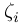 by
together with the ansatz
to point .
We find the unknown 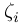 by
![\begin{array}{*{35}{l}}
& \overset{\scriptscriptstyle\frown}{\rho }_{i}^{smooth} = \frac{\sum\limits_{j}^{{}}{W_{ij}^{{}}\cdot \left( \overset{\scriptscriptstyle\frown}{m}_{j}^{{}}-\zeta _{i}^{{}}K_{ij}^{{}}\overset{\scriptscriptstyle\frown}{m}_{j}^{{}} \right)}}{\sum\limits_{j}^{{}}{W_{ij}^{{}}\cdot \overset{\scriptscriptstyle\frown}{V}_{j}^{{}}}}=\frac{\overset{\scriptscriptstyle\frown}{m}_{i}^{{}}+\sum\limits_{j}^{{}}{\zeta _{i}^{{}}K_{ij}^{{}}\overset{\scriptscriptstyle\frown}{m}_{j}^{{}}}}{\overset{\scriptscriptstyle\frown}{V}_{i}^{{}}}\text{ }\Rightarrow \\
& \gamma _{i}^{{}}\cdot \sum\limits_{j}^{{}}{W_{ij}^{{}}\cdot \left( \overset{\scriptscriptstyle\frown}{m}_{j}^{{}}-\zeta _{i}^{{}}K_{ij}^{{}}\overset{\scriptscriptstyle\frown}{m}_{j}^{{}} \right)} = \left( \overset{\scriptscriptstyle\frown}{m}_{i}^{{}}+\sum\limits_{j}^{{}}{\zeta _{i}^{{}}K_{ij}^{{}}\overset{\scriptscriptstyle\frown}{m}_{j}^{{}}} \right)\text{ }\Rightarrow \\
& \gamma _{i}^{{}}\cdot \sum\limits_{j}^{{}}{W_{ij}^{{}}\cdot \overset{\scriptscriptstyle\frown}{m}_{j}^{{}}-\text{ }}\overset{\scriptscriptstyle\frown}{m}_{i}^{{}} = \zeta _{i}^{{}}\sum\limits_{j}^{{}}{K_{ij}^{{}}}\overset{\scriptscriptstyle\frown}{m}_{j}^{{}}+\zeta _{i}^{{}}\gamma _{i}^{{}}\cdot \sum\limits_{j}^{{}}{W_{ij}^{{}}\cdot K_{ij}^{{}}\overset{\scriptscriptstyle\frown}{m}_{j}^{{}}}\text{ }\Rightarrow \\
& \zeta _{i}^{{}} = \frac{\gamma _{i}^{{}}\cdot \sum\limits_{j}^{{}}{W_{ij}^{{}}\cdot \overset{\scriptscriptstyle\frown}{m}_{j}^{{}}-\text{ }}\overset{\scriptscriptstyle\frown}{m}_{i}^{{}}}{\sum\limits_{j}^{{}}{K_{ij}^{{}}\overset{\scriptscriptstyle\frown}{m}_{j}^{{}}}+\gamma _{i}^{{}}\cdot \sum\limits_{j}^{{}}{W_{ij}^{{}}\cdot K_{ij}^{{}}\overset{\scriptscriptstyle\frown}{m}_{j}^{{}}}}\text{ }\Rightarrow \\
& \zeta _{i}^{{}} = \frac{\sum\limits_{j}^{{}}{W_{ij}^{{}}\cdot \overset{\scriptscriptstyle\frown}{m}_{j}^{{}}-\text{ }}{\overset{\scriptscriptstyle\frown}{m}_{i}^{{}}}/{\gamma _{i}^{{}}}\;}{{\sum\limits_{j}^{{}}{K_{ij}^{{}}\overset{\scriptscriptstyle\frown}{m}_{j}^{{}}}}/{\gamma _{i}^{{}}}\;+\sum\limits_{j}^{{}}{W_{ij}^{{}}\cdot K_{ij}^{{}}\overset{\scriptscriptstyle\frown}{m}_{j}^{{}}}} \\
\end{align}](6d31b52362ed58e5130325b1273485e6.png) Above, we use the abbreviation 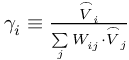 as the ratio of point volume and smoothed point volume.
From the pointwise corrections we find the global correction
Above, we use the abbreviation 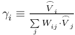 as the ratio of point volume and smoothed point volume.
From the pointwise corrections we find the global correction
 and leads to
and leads to
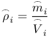
That is try to adapt the representative masses by 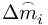 such that
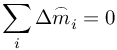
and the optimality constraint
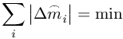
that means the sum of all particular mass changes on the MESHFREE points has to be zero in order not to generate or dissolve mass by smoothing, and that the mass adaption changes are possibly small.
This is a big optimization problem of the N unknowns 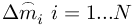. The solution would be very costly, so we propose an iteration procedure:
Version 1:
The equation above can be solved pointwise by defining mass packages 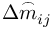 that go over from point to point :
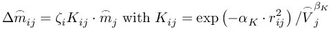
As mentioned above, is the little mass portion, given away from point to point .
We find the unknown 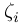 by
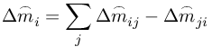
In this sense, the global sum of all mass changes is zero, which guarantees mass conservation.
Version 2:
We require
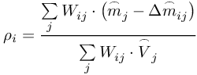
together with the ansatz
Thus, we have
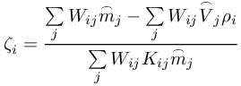
Version 3:
We require
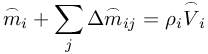
again with the ansatz
and hence it follows
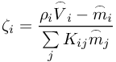
Version 4:
We try to locally exchange masses in order to equalize the current representative density. I.e. we locally exchange the masses 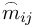 such that the averaged representative density is achieved. That is
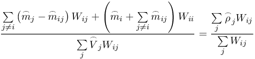
which means
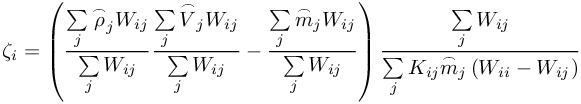
In general: the most stable behavior is produced with version 3. Versions 1, 2, and 4 often run into strange fixed points (i.e. eigenfunctions) of mass distribution -> to be further investigated .
Choose the version to be employed by RepresentativeMass_iData !